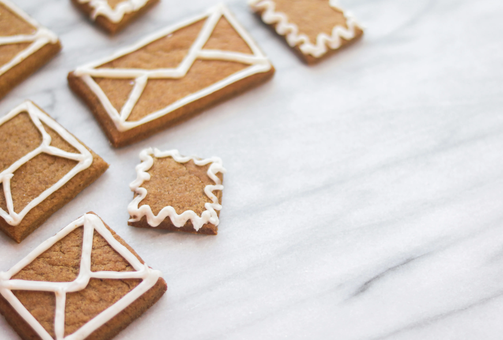
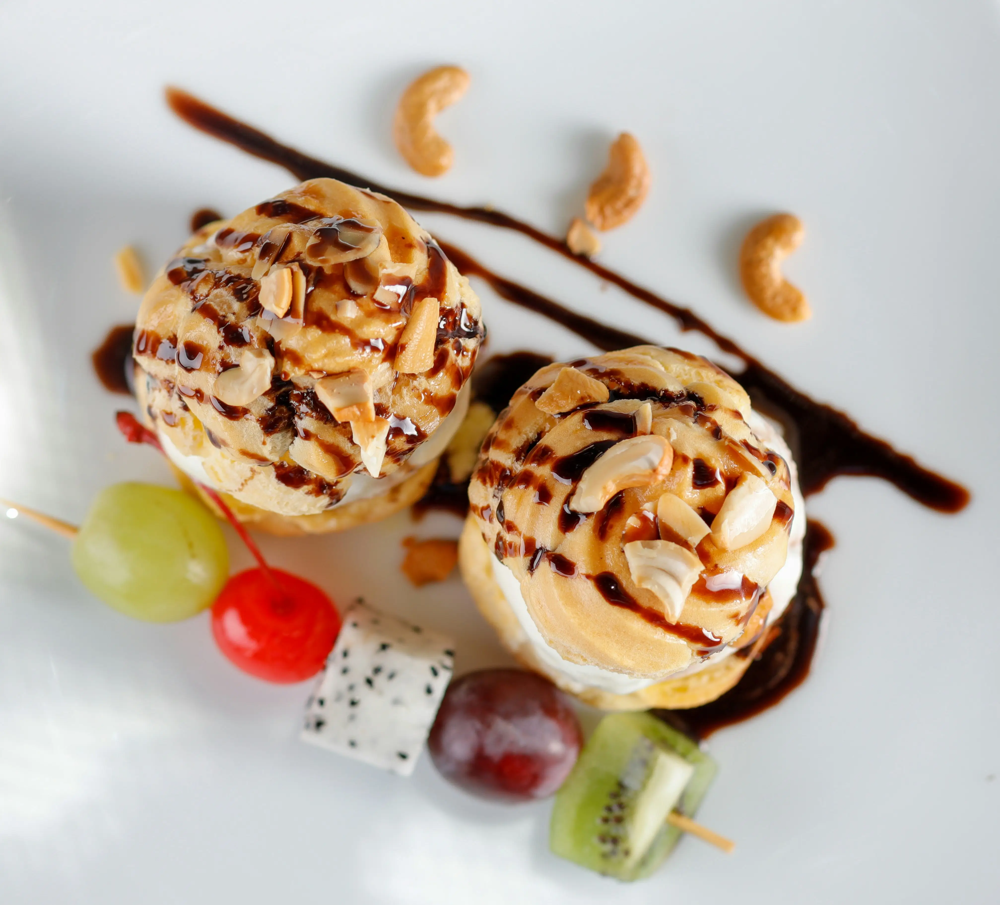
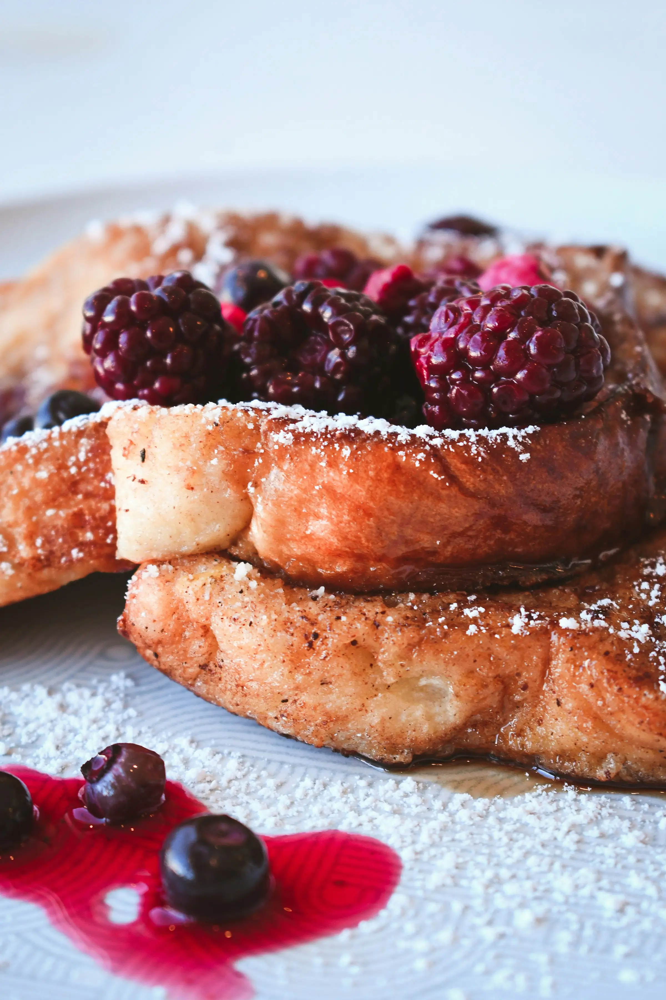

Secretos del Punto de la Carne
Por Chef Antonio
Por Repostero Jefe. Descubre los ingredientes, trucos y métodos esenciales para elevar tus creaciones dulces al siguiente nivel.

La repostería es una ciencia precisa y un arte delicado. A diferencia de la cocina tradicional, donde la intuición juega un papel crucial, aquí las medidas exactas y las temperaturas son la clave del éxito. Un buen postre comienza con la calidad de sus ingredientes, desde la mantequilla hasta el chocolate. Además, la técnica correcta de batido y amasado es fundamental para conseguir la textura deseada.
Dominar el punto de la cocción, ya sea en un horno o al baño María, es esencial. Por ejemplo, un *coulant* de chocolate debe ser firme por fuera y líquido por dentro, lo que requiere un control estricto del tiempo. Para lograr la textura deseada en masas como las de hojaldre o *choux*, es crucial respetar los tiempos de reposo y la temperatura ambiente. La incorporación de aire mediante el batido es también vital para postres como las mousses y los bizcochos esponjosos. Recuerda siempre precalentar el horno y utilizar moldes de la medida correcta para asegurar una cocción uniforme.
Pero la repostería va más allá del sabor: la presentación es crucial. El uso de glaseados, frutas frescas y elementos decorativos transforma un simple pastel en una pieza central. Recuerda que la decoración debe complementar el sabor, no abrumarlo. La clave está en la sencillez elegante y en el uso de colores naturales. Una buena alternativa es utilizar cacao en polvo o azúcar glasé para acabados rápidos y profesionales, destacando el trabajo artesanal.


Una de las bases de la repostería es el merengue. Existen tres tipos principales: el francés (el más ligero), el italiano (con jarabe de azúcar caliente para estabilizar) y el suizo (calentado al baño María para conseguir un acabado más denso y brillante). Cada uno tiene un uso específico; el francés es ideal para postres que se hornearán, mientras que el italiano es perfecto para cubrir tartas sin necesidad de cocción, gracias a su estabilidad. Aprender a diferenciar y dominar estas tres técnicas abrirá un mundo de posibilidades en tus postres y creaciones.
Aprender a hacer una crema pastelera lisa y sin grumos es otro hito fundamental. Esto se logra mezclando las yemas con el azúcar y la maicena antes de añadir la leche caliente. El truco es no dejar de remover hasta que espese y darle un golpe de calor fuerte para que la maicena se cocine correctamente y la crema no sepa a harina. Para evitar que se forme una costra, cúbrela con papel film en contacto directo con la superficie mientras se enfría. Esta crema es la base de muchos postres clásicos, como milhojas, *eclairs* y tartas de frutas.
Por Chef Antonio

Por Equipo Editorial

Por Chef Antonio